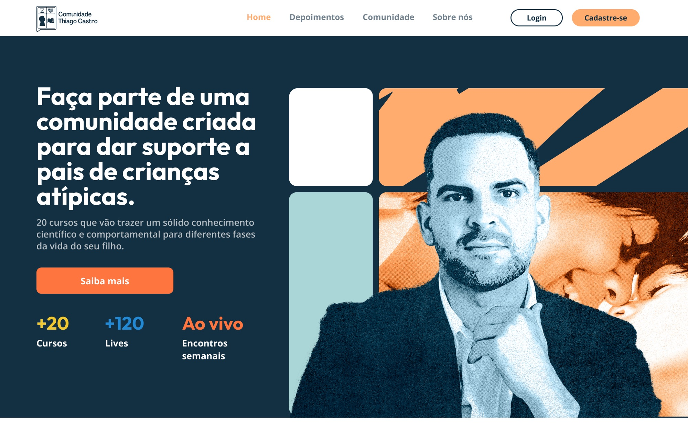
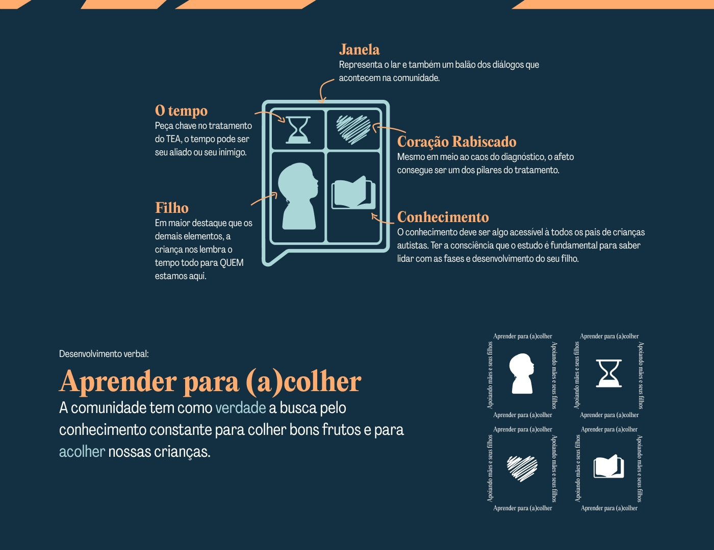
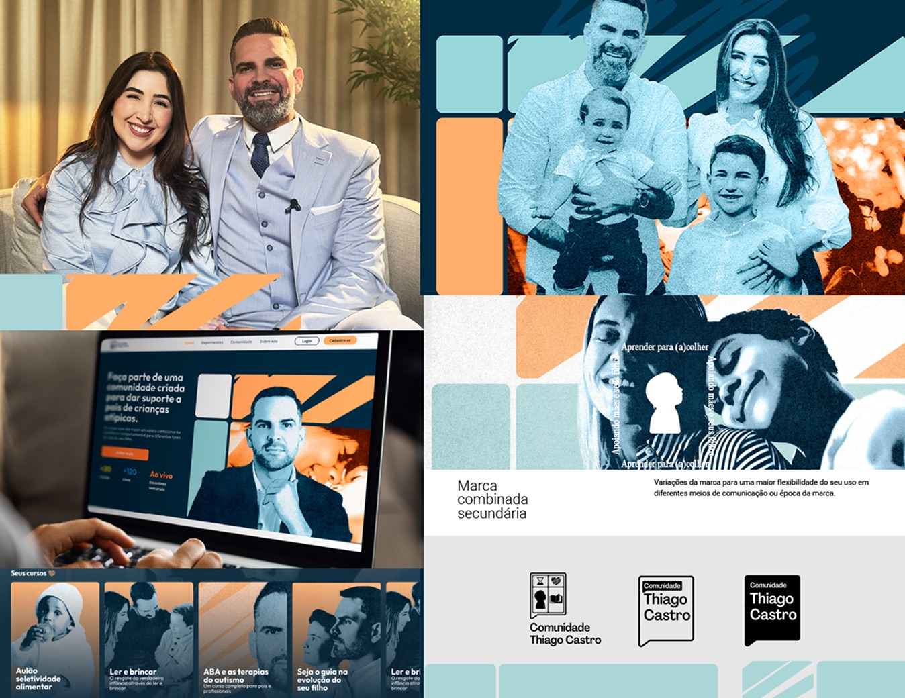
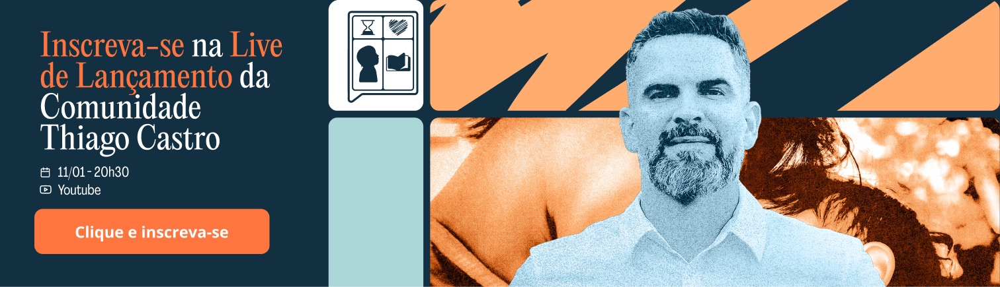

Thiago Castro Community
Thiago Castro Community is an online community and course platform for parents raising neurodivergent children. It brings expert learning and lived experience together — a place to study, ask questions, and feel less alone. An autism diagnosis often lands as pure chaos, so the brand had to turn that into welcome — mature and grounded, never clinical, never childish. So we built an identity rooted in the idea of home, warm and human, and legible down to the smallest screen.

// Project Goals
Turn the overwhelm of a diagnosis into a brand that feels like support, not just another course. Build a mature, accessible identity that holds up across a fully digital rollout — and still carries personality in print.





// The Result
A complete visual identity built around one symbol — a window that doubles as a speech bubble, holding time, love, a child's gaze, and knowledge. The wordmark reads like a proper name, with the U and N of "Comunidade" joined to signal union. A warm palette of deep navy, sky blue, and orange, two humanist typefaces, and a modular graphic system carry the brand from social posts to landing page to print — confident, welcoming, and unmistakably human.